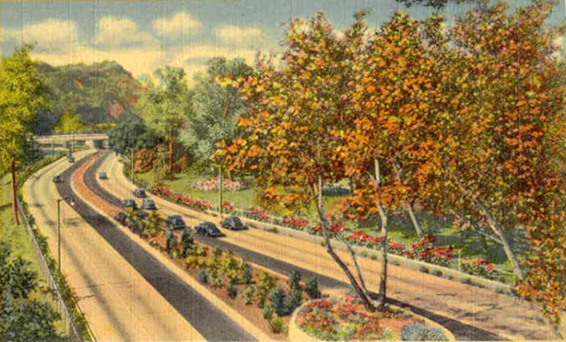

The Arroyo Seco Garden Golf Classic

About Artists Essay Events Partners
About
The Arroyo Seco Garden Golf Classic is an exhibition as miniature golf course. Over the course of three months, eighteen works will appear across eight sites spanning the rough geographic region of the lower Arroyo Seco watershed. From Altadena to Lincoln Heights, private yards and alternative art spaces will be united in an artistic experience of kitsch and play.
This exhibition concept provides the opportunity to encounter sculpture in a more casual environment than the traditional white cube or sculpture park. It also encourages direct engagement between the work and viewer through the interaction of a game. Even while utilizing the framework of miniature golf, the show gives artists free reign to question the idea of the hole, the ball, or the game itself. The works included encompass a variety of conceptual, material and sculptural practice.
The idea for this exhibition was inspired by the particular qualities of outdoor space in Los Angeles. LA is a city bursting with the endless possibility of perfect weather. It is also a landscape shaped by the speculative real estate fantasies of generations of dreamers. The dispersion of the exhibition across multiple sites serves to not only highlight the patchwork quilt sprawl of the city but also to draw connections between like-minded alternative spaces across east Los Angeles.
Artists
- Joshua Callaghan
- Kristin Cammermeyer
- Andrew Choate
- Jacqueline Laurita Cortese
- John Emison
- Darren Goins
- Earl Gravy
- Michelle Carla Handel
- James Herman
- Orr Herz
- Raymie Iadevaia
- Alice Lang
- Anton Lieberman
- Chris Niemi
- Molly Jo Shea
- SPF15 presenting: Chelsea Culp, Connor Creagan, Audrey Hope, HorseshoeCrabs HorseshoeCrabs, Angie Jennings, Tim Mann, Sogi's Honey Bakeshop, Jon Waites, Chris Warr, Allison Wiese, and Alexander Wolfe
- Drue Worell
- John Zane Zappas
The Great American Mini-Golf Game
By Alicia Eler
My first visit to the hyper-colorful, kitsch-filled mini-golf course that is Novelty Golf and Games in Lincolnwood, Illinois1, left me feeling amazed, confused and utterly ecstatic. I tried my hand at this game while simultaneously watching people with no actual golf skills attempt to use ill-fitted clubs to knock variously colored, tiny dimpled golf balls into cement-lined holes in the ground. Of the two 18-hole mini-golf courses at this place, the Statue of Liberty hole stuck in my memory; knock the ball under her base, and hope that it makes it past the sliding door or into the secret-slot-with-tunnel, which offers a chance at a hole-in-one. It is as if to say: “Now you’re inside of America! You’ve won because you’ve arrived!”
Observing various non-English speaking immigrants argue, mostly in Polish, at each other while trying to get an American “hole-in-one” seemed like a strange commentary on what it could mean to “win America.” But of course that seemed far-fetched and too simplistic a game, even to adolescent me, enjoying a Saturday afternoon at the course with my grandmother and younger sister. We were all just there to have fun! The memory of Lady Liberty early on in the course was forgotten upon arriving at the absurdly hard-to-play Frankenstein’s head hole number 18, where the sheer terror of trying to end the game brought on a haunting scene from some B-movie horror flick that likely aired at 3am on some cable station. This game was all just entertainment, kitsch, a fun way to blow a few bucks on a summer evening, something to play, an American tradition.
Mini golf first became popular in the 1920s, that whimsical time of The Great Gatsby and a surge in American leisure times. The first mini-golf course was credited to Garnet Carter, who already had a full-size, arguably more “real” golf course in his name, and also owned the Fairyland Inn, a hotel near Chattanoga, Tennessee. The mini-golf course he created, which included hollowed-out tree trunks and gnomes, was meant to enhance the Never Never Land atmosphere of his inn. 2
Other types of mini-golf courses built during the 20s usually featured garden-like settings; in Manhattan one could even find mini-golf courses on rooftops. By the end of the decade, there were 40,000 courses across America; they came custom-built and pre-fabricated, boasted novelty features such as windmills, and many were located near highways.3 Their popularity continued throughout the Great Depression. Though the mini-golf craze did die down after its popularity in the 1920s, it picked up again in the 1950s, in part because of Don Clayton’s Putt-Putt brand, which was chock full of irresistible gimmicks, a bit more professionalized, and also responsible for coining the term “putt-putt” when referring to mini-golf. 4
It could be that this commercialization of mini-golf, complete with brand management, gimmicks, and a heightened sense of competition amongst players, is what solidified mini-golf as a truly American form of entertainment, consumerism, and “fun.” As I recall, I never did get that Statue of Liberty hole-in-one. That game was rigged.
- 1 Yelp page for Novelty Golf & Games, http://www.yelp.com/biz/novelty-golf-and-games-lincolnwood
- 2 Greenbaum, Hilary and Dana Rubenstein, “Who Made Mini Golf?” New York Times Magazine, (April 6, 2012)
- 3 Watts, Linda S., Alice L. George, and Scott Beekman. Social History of the United States: The 1920s (ABC-CLIO, 2009), https://books.google.com/books/about/Social _History _of_the_United_States.html?id=Vw5ZAAAAYAAJ
- 4 Jake Mann, “An Inside Look at Putt-Putt, One of Golf’s Most Iconic Brands,” http://www.fool.com/investing/general/2014/05/ 15/ an-inside-look-at-putt-putt-one-of-golfs-most-icon.aspx
After two and a half months of sculpture, performance, and play
there is one more chance to play through the course!

Altadena
10:30am - 12pm
Darren Goins

Glassell Park
10:30am - 12:30pm
Michelle Carla Handel & Orr Herz
*Additional Open Hours*
2-5pm Saturdays December 5th & 12th
John Emison & Raymie Iadevaia

Lincoln Heights
12:30 - 2:30pm
Jacqueline Laurita Cortese, Chris Niemi, & John Zane Zappas
Alice Lang & Molly Jo Shea
Kristin Cammermeyer, Andrew Choate, & Anton Lieberman
*Additional Open Hours*
6-8pm Fridays December 4th & 11th

Closing Party
3 - 5pm
Arroyo Seco Golf Course
South Pasadena
Join us for a drink to celebrate our tournament champion!
Award Jacket Design by Lauren Satlowski


-


Open Course Sunday December 13th
Past Events
Partners & Collaborators
Click Here to join our mailing list and receive updates on events, tee times, and more